01
컬러로 만든 위계와 구분
절제된 컬러 사용으로 정보의 위계를 세우고, Mainnet · Testnet · Devnet처럼 헷갈리기 쉬운 정보는 컬러로 명확히 구분했습니다.
ImFact Scan UX/UI Design
Web UX/UI · Blockchain Explorer
방대한 온체인 데이터를 한눈에,
임팩트 블록체인의 실시간 검색 엔진
01 — Overview
ImFact Scan은 임팩트 블록체인 생태계의 실시간 검색 엔진입니다. 블록, 오퍼레이션, 계정, 토큰, NFT까지 방대하고 복잡한 온체인 데이터를 사용자가 한눈에 파악할 수 있도록 정보의 그루핑과 명확한 시각적 위계에 집중해 데이터 대시보드를 디자인했습니다.
01
절제된 컬러 사용으로 정보의 위계를 세우고, Mainnet · Testnet · Devnet처럼 헷갈리기 쉬운 정보는 컬러로 명확히 구분했습니다.
02
많은 데이터를 대시보드 카드와 드롭다운 메뉴로 묶어 찾기 쉽게 정리했습니다.
03
PC · 태블릿 · 모바일 세 구간에 맞춰 표와 메뉴가 자연스럽게 바뀝니다.
My Scope
서비스 기획은 기획팀이 맡았고, 저는 전체 화면의 UX/UI 디자인을 맡았습니다. 기획된 기능과 데이터를 사용자가 헷갈리지 않고 빠르게 읽을 수 있도록 화면 구조와 컴포넌트를 설계했습니다.
scan.imfact.im 바로가기 ↗02 — Network Color
같은 익스플로러로 실제 서비스(Mainnet), 테스트(Testnet), 개발(Devnet) 세 네트워크를 모두 조회합니다. 화면 구조가 똑같아 지금 어느 네트워크를 보고 있는지 헷갈리기 쉬웠기 때문에, 레이아웃은 그대로 두고 헤더 컬러와 네트워크 배지만 바꾸는 방식으로 구분했습니다.
브랜드 그라데이션을 쓴 밝은 헤더. 실제 자산이 오가는 기본 네트워크입니다.
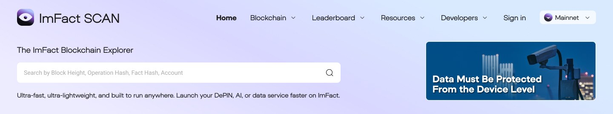
블랙 헤더와 보라색 배지. 로고 옆에 'Testnet'을 함께 표기했습니다.
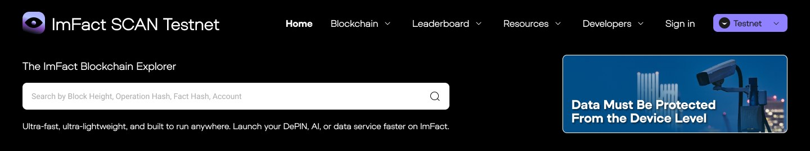
다크 그레이 헤더와 라임색 배지. 개발용 네트워크임을 한눈에 구분합니다.
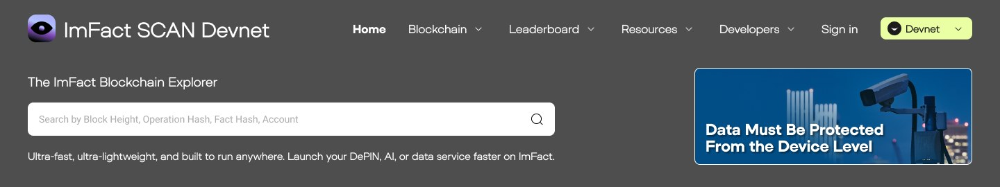
본문 레이아웃과 컴포넌트는 세 네트워크 모두 같습니다. 익숙한 화면은 유지하고 구분이 필요한 부분만 바꿨습니다.
헤더 배경색, 로고 옆 네트워크 이름, 우측 상단 배지까지 세 곳에서 현재 네트워크를 알려줍니다.
가장 많이 쓰는 Mainnet은 브랜드 컬러로, 테스트용 네트워크는 어두운 톤으로 차이를 크게 두었습니다.
03 — Grouping · Dashboard
익스플로러는 한 화면에 보여줘야 할 숫자가 매우 많습니다. 데이터를 나열하는 대신 성격이 같은 지표끼리 카드로 묶고, 핵심 숫자는 크게, 24시간 변화량은 작은 태그로 붙여 읽는 순서를 정리했습니다.
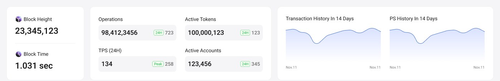
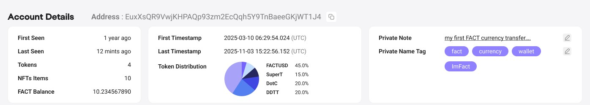
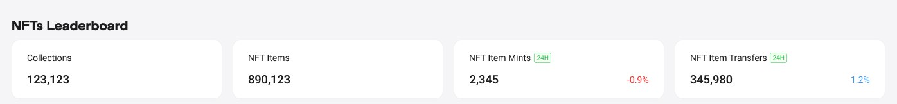
04 — Grouping · Dropdown
블록, 오퍼레이션, 토큰, NFT, 노드, 통계, API까지 페이지가 많아 메뉴가 길어지기 쉬웠습니다. 사용자가 찾는 목적에 따라 Blockchain · Leaderboard · Resources · Developers 네 그룹으로 묶고, 필터와 검색 결과도 같은 원칙으로 정리했습니다.
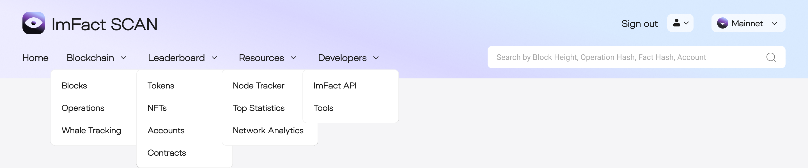
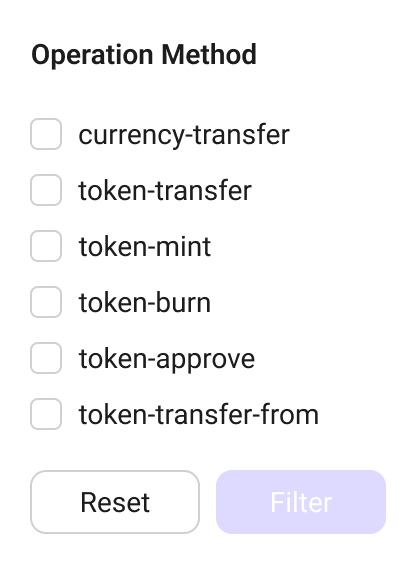
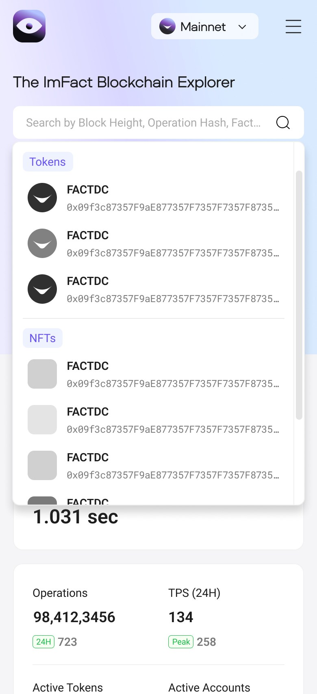
05 — Responsive
데이터 표가 많은 서비스라 화면 폭이 줄면 정보가 쉽게 잘립니다. PC · 태블릿 · 모바일 세 구간을 기준으로 헤더 · 표 · 카드가 어떻게 바뀌는지 정의했습니다.
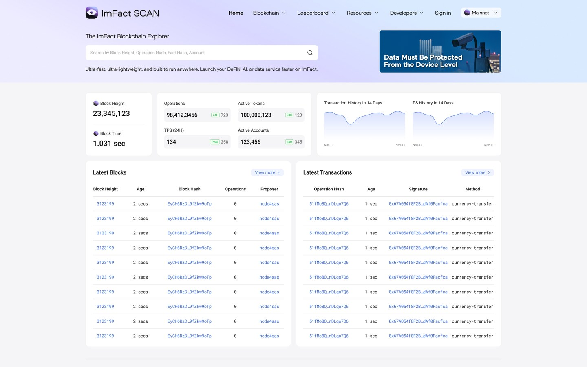
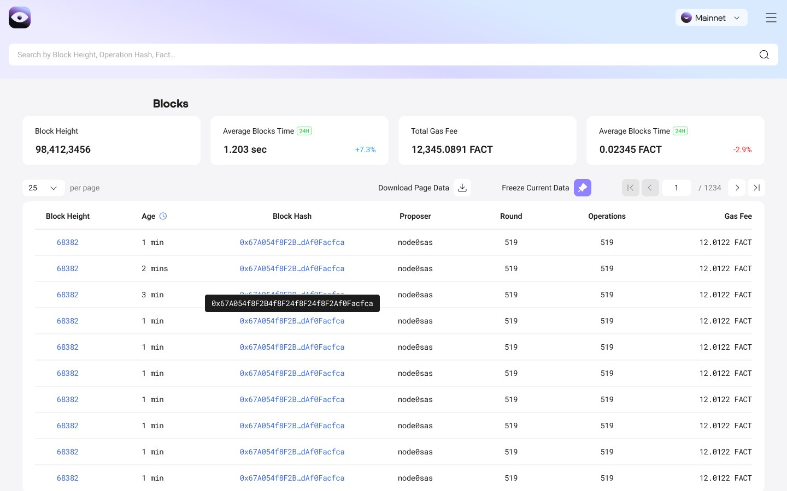
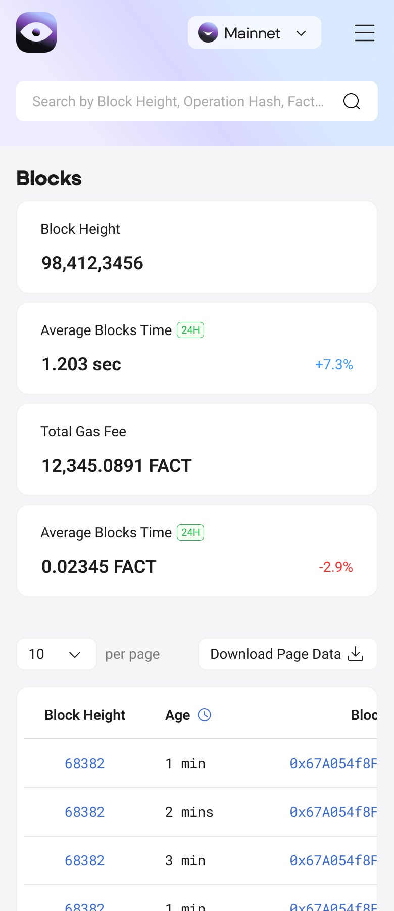
PC에서는 메뉴와 네트워크 선택을 한 줄에 두고, 화면이 좁아지면 메뉴를 햄버거로 접은 뒤 검색창을 아래 줄에 넓게 배치했습니다.
좁은 화면에서는 표의 열을 줄이지 않고 가로 스크롤로 보여줘, 해시처럼 긴 값도 끝까지 확인할 수 있게 했습니다.
가로로 놓인 지표 카드는 화면 폭에 맞춰 세로로 쌓이며, 카드로 묶은 그룹 단위는 그대로 유지됩니다.
06 — Key Screens
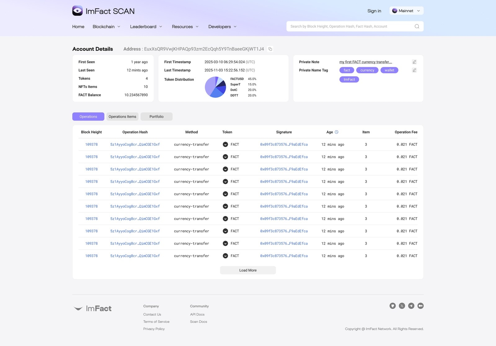
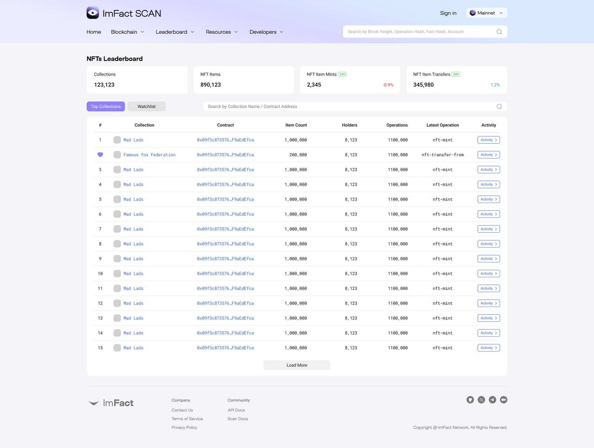